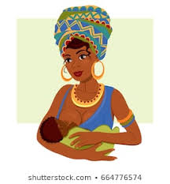

Breast Is Best

BIB Mission Statement
Breast Is Best of Greater Boston is a non-profit donor milk bank established in 2019.
Our mission is based on the belief that every baby deserves access to human milk.
We carry out this mission through the safe collection and distribution of
human donor milk, education, advocacy, and research.
Our mission:
Bank improves the health and survival of
the BIB Greater Boston’s most vulnerable babies.
Our vision:
A Greater Boston region where every baby has access to the human milk they need.